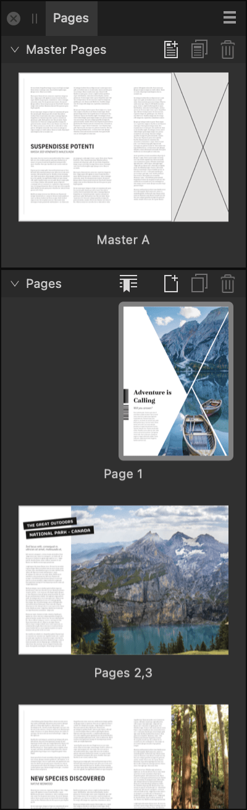

A document's publication pages can be arranged (moved) on the Pages panel.

Pages can be arranged using drag and drop, which is ideal when the destination is near the pages' current position.
Moving pages further is more easily done by specifying the destination on a dialog.
When dragging page thumbnails:
Available positions vary according to whether Reflow Pages (on the Pages panel's preferences menu) is enabled or disabled.
When Reflow Pages is enabled, pages will reflow starting at whichever is earliest—either the first page in the selection or the position where you drop—through to the end of your document.
When Reflow Pages is disabled, pages will not automatically reflow. This may result in 'ghost' pages.
On the Pages panel:
1 Alternatively, you can specify the pages later, by typing their numbers on the dialog.